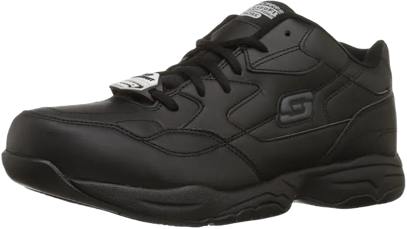

9 Best Orthopedic Slip Resistant Shoes in 2024
When working in environments where you face challenging conditions underfoot, wearing the best orthopedic slip-resistant shoes is vital for your safety. These specialized shoes are necessary if you work in industries like kitchens, restaurants, factories, or other areas where slipping is a risk. In many cases, companies require employees to wear these shoes to comply with safety regulations.
We explore the key factors that make these shoes stand out in the market, from their design and material composition to their effectiveness in wet, oily, and slippery conditions. Non-slip footwear is especially beneficial for professionals like nurses, offering both safety and comfort, particularly for those dealing with issues such as neuropathy.
-
#1
Skechers guys’ work Felton
Skechers is a well-known brand when it comes to footwear, and it’s no surprise they’ve made our list with their top-quality options. The Skechers Men’s Work Felton is one of their best designs and a popular choice among consumers. Featuring a classic lace-up design, these shoes are perfect for handling slippery surfaces, giving you the grip you need in any environment.
These shoes meet Mark II standards for non-slip performance and comply with EH (Electrical Hazard) safety requirements. The Work Felton shoes boast a low-profile, rubber outsole that delivers excellent traction, ensuring your feet stay secure even on wet, oily, or slick floors. While they may not have as aggressive a tread as some other Skechers models, they still provide the reliable grip Skechers is known for.
The extra traction is enhanced by the sole, which extends up the heel and along the sides to help you maintain a solid footing. Work Felton shoes are crafted with a stylish leather upper and feature reinforced stitching. Combining both comfort and style, these shoes ensure your workday is not only safer but also more comfortable, no matter what challenges you face. -
#2
Skechers men’s Flex advantage

Skechers also impresses with their Men’s Flex Advantage, a versatile option perfect for both work and leisure. These shoes offer not only durability but also superior comfort, making them ideal for individuals who spend long hours on their feet. Featuring strong, stylish soles made from a blend of leather and synthetic materials, these shoes provide breathability while maintaining a secure grip thanks to the rubber outsole.
The slip-resistant sole ensures excellent traction, while the strap closure keeps your shoes securely in place throughout the day. With gel-infused memory foam insoles, these shoes offer maximum comfort, allowing you to stay comfortable on your feet for extended periods. Additionally, the insoles are removable, making it easy to swap them out if you have special orthopedic needs.
The Flex Advantage is a great choice for servers and others who are constantly on the move, as it’s designed specifically for those who require all-day support. Combining both style and functionality, Skechers Men’s Flex Advantage is worth the investment for anyone seeking reliable, non-slip footwear that won’t disappoint. -
#3
AVIA women’s Avi Union provider
If you're looking for comfortable, affordable footwear suitable for any environment, the AVIA Women’s Avi Union Work Shoes are a fantastic option. Designed with professionals in mind, especially those in service industries, these shoes feature a durable leather upper that resists both water and stains, making them ideal for nurses, healthcare workers, and similar roles.
The EVA-molded heel provides excellent shock absorption, adding extra comfort to the midsole. Additionally, the removable sock liner allows you to insert your own orthopedic insoles if needed. The padded tongue and collar, combined with a breathable mesh lining, ensure your feet stay cool and comfortable throughout the day.
The rubber outsole is not only oil-resistant but also features a tread pattern that grips securely to various surfaces, offering reliable traction no matter the conditions. With a Cantilever design, these shoes deliver enhanced heel support and stability, while the reinforced toe caps provide added protection in hazardous environments. -
#4
Skechers girls’s clean Stride-Softie
The OSHA-compliant, sleek, and sloped design of the Women’s Skechers Soft Stride-Softie includes a 1.5-inch heel and a rubber outsole. These shoes are a fantastic choice for women working in service industries or other hazardous environments, offering both safety and style. With a tread pattern that provides excellent grip and a removable outsole designed to be replaced at the end of its lifespan, these shoes deliver not only durability but also superior support and traction.
Inside, the shoes are equipped with a comfortable PU insole, which can be easily removed and replaced with your own orthopedic inserts if needed. Lightweight and breathable, they are designed to keep your feet cool and dry while offering maximum protection. The Soft Stride-Softie is one of the most popular Skechers work shoes for women, known for its balance of comfort and safety.
Crafted with a high-quality leather upper and detailed with the Skechers logo on the side, these shoes feature a stylish, non-slip sole. They are the perfect pair for women who want to stay protected and comfortable, whether they’re working or enjoying their downtime. -
#5
Reebok men’s paintings N Cushion 2.0
.webp)
Appearance is essential when you work in a professional setting, but you still need footwear that keeps your feet safe and comfortable. The Reebok Men’s Work N Cushion 2.0 combines a sleek leather upper, perfect for formal wear, with long-lasting durability. Its low-cut design and beveled heel enhance its style, making it one of the most professional-looking shoes you’ll want to wear while working hard.
In addition to its stylish look, this Reebok shoe features an oil-resistant outer sole that offers superior support and excellent traction on slippery, wet, or oily surfaces. Equipped with DMX Ride technology, it provides extra comfort, especially for men with wider feet, making it an ideal choice for all-day wear.
In addition to its stylish look, this Reebok shoe features an oil-resistant outer sole that offers superior support and excellent traction on slippery, wet, or oily surfaces. Equipped with DMX Ride technology, it provides extra comfort, especially for men with wider feet, making it an ideal choice for all-day wear. -
#6
Dockers notion Moc Toe idler
If you're looking for shoes that don't resemble heavy work boots but still offer the same level of protection, the Dockers Trustee Moc Toe Loafer Slip-Ons are a perfect choice. They combine style and sophistication with the sturdy support you need for your feet. These loafer-style shoes feature a sleek leather upper that’s water-resistant, along with a square toe and 1-inch heel, providing a polished, professional look.
The flexible goring tongue allows for easy slip-on convenience, making these shoes hassle-free to wear all day. With a dual-textured design, fabric lining, and a cushioned insole with a gel heel pad, these loafers provide the comfort and ease of a work shoe, without the bulk of traditional boots.
Most importantly, the synthetic sole and rubber outsole ensure a solid grip, whether you're walking on wet, slippery surfaces at work or strolling through the city with friends or family. These shoes are also an excellent option for older gentlemen seeking support and comfort without the need for laces. -
#7
Skechers men’s Cottonwood Goddard dual Gore
Skechers, a well-known brand for quality footwear, offers the Men’s Cottonwood Goddard Dual Gore Shoes, designed to keep you comfortable and stylish throughout long workdays. These shoes are perfect for those who spend extended hours on their feet, especially in challenging environments. The Goddard Dual Gore shoes provide excellent comfort and stability, helping to alleviate the discomfort of long periods of standing or walking.
The durable leather upper is both stylish and resilient, while the sole and outsole offer exceptional grip in various conditions. These shoes are crafted to meet the demands of both comfort and performance, making them suitable for any work setting.
Ideal for restaurant staff, from servers to cooks, these comfortable leather shoes are not only fashionable but also safe, meeting Mark II and EH safety standards. The Skechers Men’s Cottonwood Goddard Dual Gore Shoes are a great choice for anyone needing reliable, comfortable footwear in demanding work environments. -
#8
Skechers ladies’s Eldred
Walking all day can be exhausting, especially in environments where foot conditions are hazardous. Skechers understands the need for women to have high-quality, comfortable footwear that combines both slip resistance and style. That’s why they offer the Skechers Women’s Eldred Shoes. These shoes feature a durable leather upper that provides excellent protection and helps prevent slipping, making them ideal for workplaces with slippery, wet, or uneven floors.
The strap closure ensures a secure fit, keeping the shoes comfortably in place throughout the day. The robust yet soft material is both breathable and comfortable, while memory foam insoles enhance comfort, allowing you to stay on your feet without experiencing soreness by day’s end.
The strap closure ensures a secure fit, keeping the shoes comfortably in place throughout the day. The robust yet soft material is both breathable and comfortable, while memory foam insoles enhance comfort, allowing you to stay on your feet without experiencing soreness by day’s end. -
#9
Walker Cheap Orthopedic Slip
Traditional shoes with the added benefit of non-slip soles and a variety of colors are ideal for men who spend long hours on their feet in service industries. These shoes offer the best of both worlds with their rubber outsole, providing excellent traction and durability. The leather upper is both firm and stylish, featuring a 1.5-inch heel for added support.
The lace closure ensures a secure fit, keeping the shoes in place throughout the day. The neoprene collar allows for smooth movement, while the snug-fitting tops and stretchable socks make them easy to put on and take off.
Lightweight, flexible, and available in fun colors, the Dansko Men’s Walker Oxford Shoe is a great choice for professionals looking to add a bit of style to their workwear. The rubber soles provide safety in unstable conditions, while the additional leather details and reinforced overlays ensure your feet stay comfortable and supported during long hours of work.